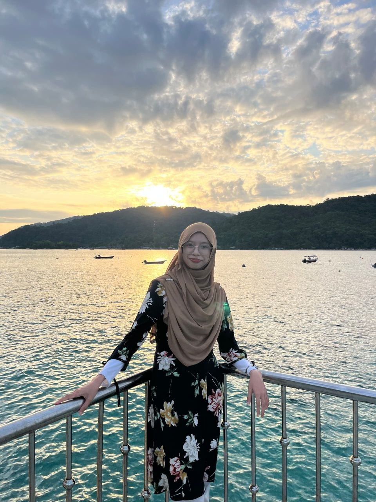
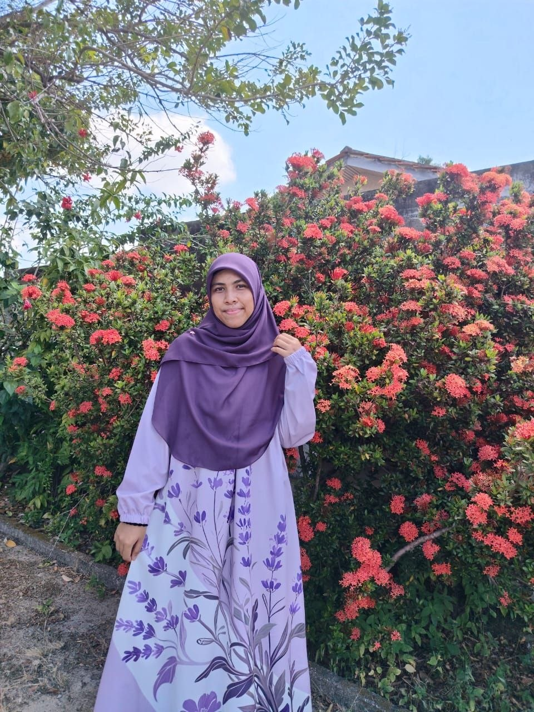
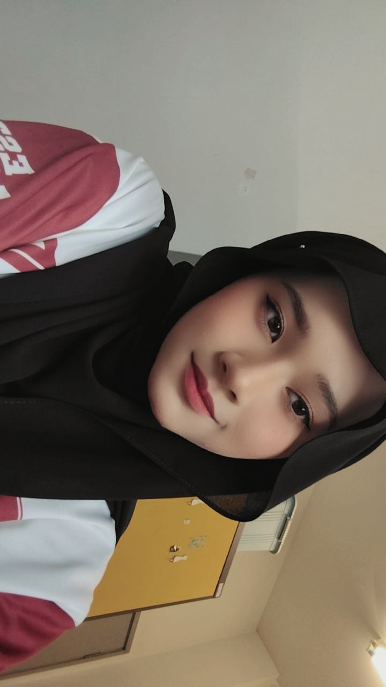
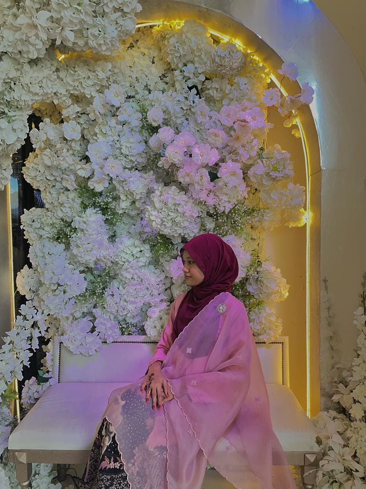
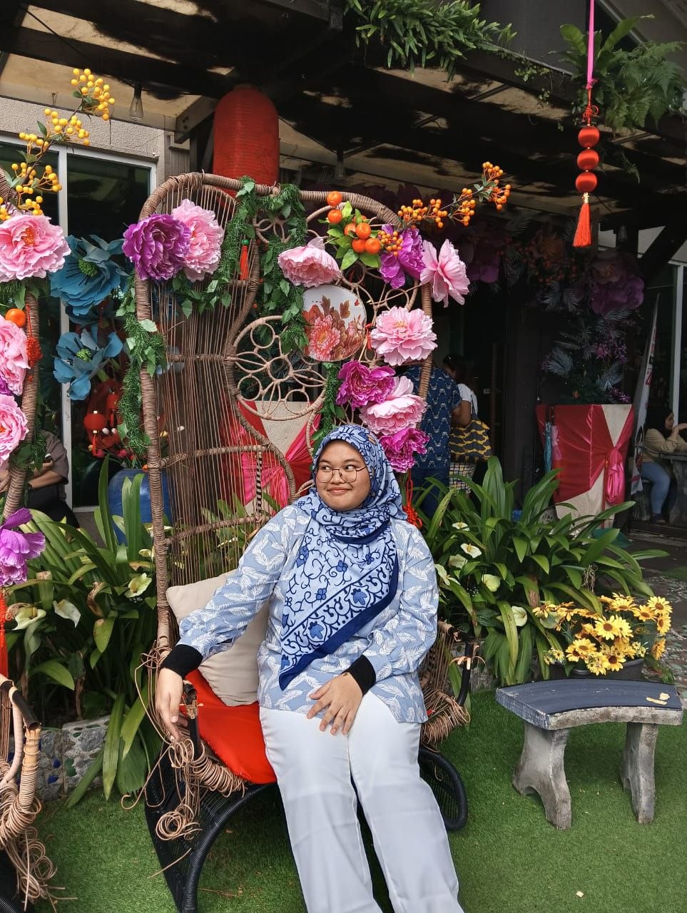
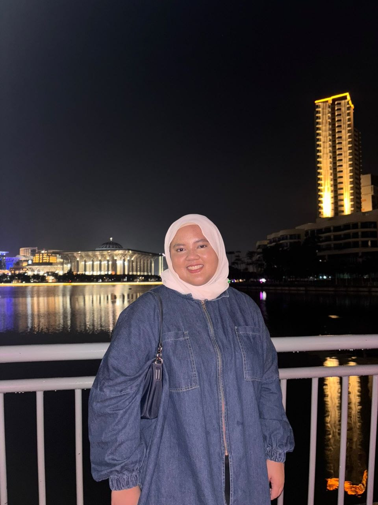
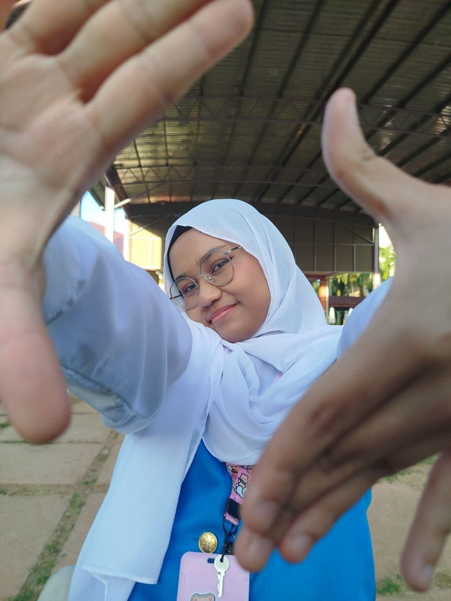
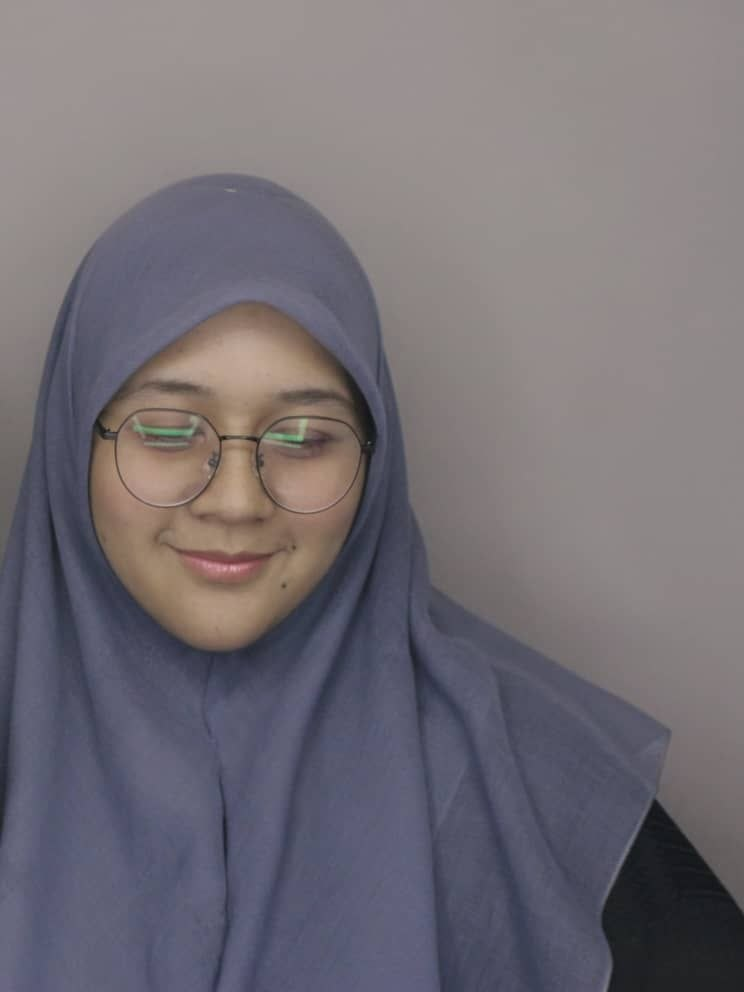
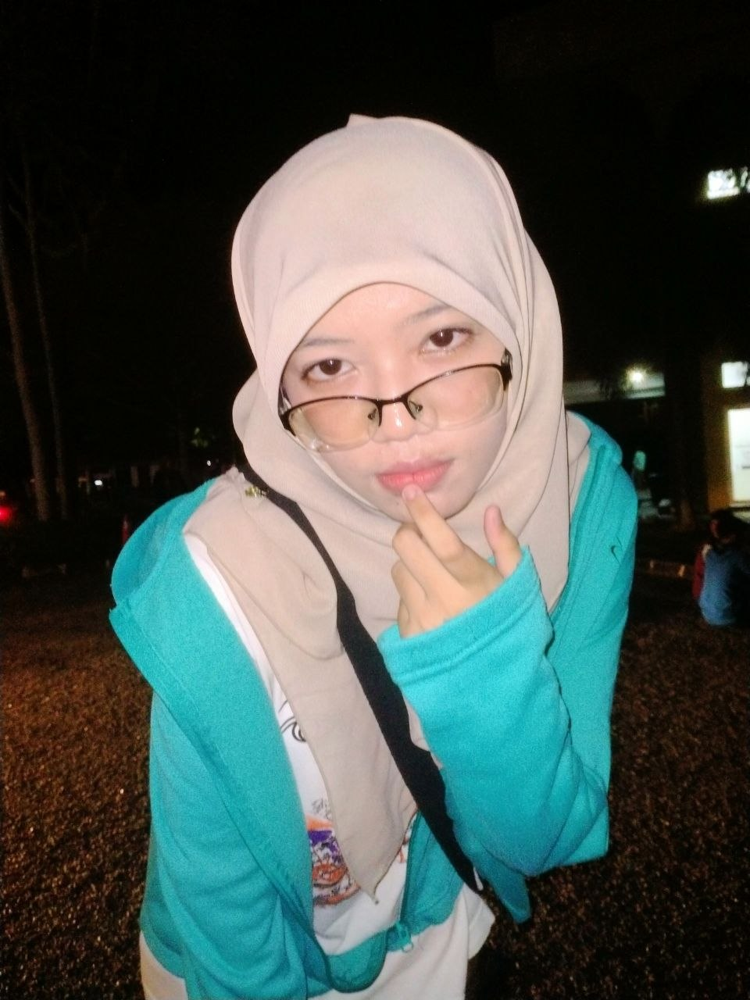

Aira Shuu's Destinaire
"Where Stories Become Destiny."
HOME
|
ABOUT ME
|
FAMILY
|
FRIENDS
|
MY FAVORITES
|
MY LIBRARY
|
BUCKET LIST
MY FRIENDSHIP!
The people who turns this ordinary life of mine
into an unforgettable memories and thus I will cherished always.
🌙 Companions Between Chapters
Friends are the family we choose for ourselves.
They bring happiness, comfort, support, and
countless unforgettable memories into our lives.
Each friendship tells its own unique story,
and every person here has become a special chapter
in my universe.
|
Persatuan Beban ii Bersatu
aka Bebaniesss!!!
| The Members |
The Records |
|

|
Name: Nurfatin Najwa binti Mohd Faizal
Nickname: Naj / Najwaee
Birthday: March 10, 2006
Currently studying at UTHM.
Quotes: "It's okay if you don't like me, not everyone has a good taste"
Fun Facts:
-Tadika, sekolah agama, and sekolah menengah sama... tinggal kat belakang umah selang beberapa lorong je.
-Manusia yg selalu mengajak keluar.
-Kacau dia masa dia baru lepas bangun tidur, get ready untuk kene maki ngan dia..
|
|

|
Name: Nik Hafeezatul Husna binti Nik Ahmad Zareen
Nickname: Unaa / Chuuna
Birthday: January 28, 2006
Currently studying Chemical Science at UMT.
Quotes: "This dunya is nothing but a beautiful lie 3:185"
Fun Facts:
-First time jumpa waktu darjah 6, pertandingan pantun. Lawan pantun against our schools.
-Geng budak jepun gak. Kene heret untuk sambung smpai hbes SPM
-Legit budak ni comel je.. Tapi asyik downgrade diri.. Sabar saja lah ini diri.
-Adik-adik dia ramai sampaikan dia pon tak ingat birthday
|
|

|
Name: Nurul Assyatira Nasyrah binti Ishak
Nickname:Assyaa / Mummy-
Birthday: February 11, 2006
Currently studying Statistics at UiTM Raub.
Quotes: "If you carry around the bricks from the past, you'll end up building the same house."
Fun Facts:
-She is gorgeous but too much pujian, nnti perasantan budak nihh
-Gamer.. ML, Genshin, HOK, Honkai
-Budak aktif sukan..Bro lupa dia main rugby, tangan dah naik atas nk defend sebab dh terbiasa main netballl.
|
|

|
Name: Nadia Athirah binti Mazlan
Nickname:Nadia / Athy
Birthday: February 07, 2006
Currently studying Quantity Surveying at IIUM.
Quotes: "Hate to break it to you my dear, but effort goes both ways"
Fun Facts:
-Our lovely Nenda
-Ni pon budak kene heret sambung jepun smpai habes SPM
-Tempted nak intern kat IIUM semata nak jumpa nadia (alang ii Harith Reazal)
-She keeps saying she looks puffy lately, but somehow I still could see light sparks on her face. Baby looks pretty
|
|

|
Name: Nurr Atiiqah Izzati binti Mohamad Rafizal
Nickname:Izzati / Akak
Birthday: March 20, 2006
Currently studying Plant Biotechnology at UKM.
Quotes: "Loyalty isn't claimed, it's proven"
Fun Facts:
-Akak Pengawas kita rawrrr
-another one yang kene heret sambung jepun smpai habes SPM
-Budak Hoki, otak bergeliga be like.
-Even in the dark, her face still shines like gurll, I'm jealous of that cahaya nurr
|
|

|
Name: Nur Farzana binti Mohd Hasli
Nickname:Nana / Neyneyyyy
Birthday: December 18, 2006
Currently studying Electrical Engineering at UiTM Shah Alam.
Quotes: "Every story has the potential of infinite ending"
Fun Facts:
-Social Butterfly
-Somehow pergi ke mana-mana, ada aje orang yang kenal dia.
-Ni pon budak hoki gak nihhh
-kau akan nampak dia dalam flight lagi banyak instead of kat rumah or kolej.. (rasa nak minta semua souvenir)
|
|
Budak ii Broke
aka Brokiesss!!!
| The Members |
The Records |
|

|
Name: Nur Aqilah Nadhirah binti Abdullah
Nickname: Qiee / Yakult
Birthday: May 25, 2006
Once said:
-"Ishh.. Aq jalan elok dah.. diorang yang tak reti bagi jalan."
-"Meja ni yang salah.. patutnya besar lagi"(after *th times main kat lantai)
Fun Facts:
-Qie and Qiffling.. never ending relationship.
-Manusia yang suka kasi idea gila.. Saya tukang sokong aje (Said yes to any pembaziran duit)
-When she plays ML, she will cursed to dumb people. It's funny looking her frustrated..
|
|

|
Name: Nurul Amiratussolehah binti Johari
Nickname: Mirs / Kak Tus
Birthday: September 13, 2005
Once said:
-"Kau naik slide dulu kat park, slide kau melintang ehh?"
-"Orang kata sakit tu boleh kurangkan pahala"
Fun Facts:
-Keje dia dump lore. Alia traumatized dengar story ii dia
-Sume orang pakat pi kat dia.. Tiber bro jadi kaunter pertanyaan public-
-Otak masuk air, and keje nak bunuh semua character yang dia buat. Angst so much!!
|

|
Name: Muhammad Nirman Atif bin Mohd Azrool Rizal
Nickname: Maman
Birthday: September 06, 2006
Once said:
-"NEW DAY CANCELLED"
-"6 7"
Fun Facts:
-Dia dengan 6 7 , and also scuba dia... eihh laaa
-One more time of him saying New Day Cancelled, Amira nanti tembak dia
-Deku's fan. To the point even us think that Nirman slowly looks like Deku...
|
|

|
Name: Alia Syazliana binti Mohd Yusri
Nickname: LIAA / Yayayaya
Birthday: July 02, 2006
Once said:
-"Talian hayat kita pun tak paham ke weyhh"
-"Penyapu burok, mak ngko ikan dolphin"
Fun Facts:
-nampak nonchalant, tapi percayalah, sama ii otak cam terbang jauh hilang
-Certified Bront Palarae lover.. Next movie, Pengabdi Setan 2 (dia baru tahu ade mamat nihh)
-Jalan laju nyahh.. kau jalan ngan dia, pejam bukak balik mata, bro dah nun di depan... Angin pon kalah..
|
|
Roommate (Now is Jiran Sebelah)
aka My first friend at UiTM
| The Records |
Name: Nurul Ain binti Ismail
Nickname: Ketua / Ain Economic (dapat daripada buku Economic sem 3 dia yang tebal)
Birthday: April 30, 2006
Once said:
-"Apa ii pon, wa balik dulu yaa"
-"Tak pa laa.. Nanti kita jumpa la tu depan pintu"
Fun Facts:
-Certified PBSM (Persatuan Balik Setiap Minggu)
-Roommate dari Sem 1 hingga 2. Masuk sem 3 and sem 4 nihh jadi jiran ajee.. sudahnye dari bergosip dlm bilik, jadi bergosip kat tangga atau depan pintu
-Bro tak tahu dia lahir kul bape..
-Also jealous ngan saya kerana Jadual dia yg pack teramat meanwhile my schedule is so calm.. (bukan salah saya.. saya tak bersalah)
-Bilik kami, selagi tak de sapa yang nak buat keje, rela bergelap takde lampu, lepak atas katil sampaila tiber masa hidayah mari
-Normal routine: bangun pagi, pandang katil sebelah, nampak dia tidur lagi, then apa lagi? Sambung tido la jugak..
-Nak tengok kegilaan kami, boleh suh kami main stumble guys.. (hanya Allah tahu betapa anehnya kami di saat itu.. Selagi tak menang nombor satu, selagi tu main..)
|
|
Copyright © 2026 Aira Shuu
Aira Shuu's Quiet Universe
Recommended Browser: Google Chrome
Best Viewed in 1920 × 1080 Resolution
Last Updated: June 2026
.jpg)